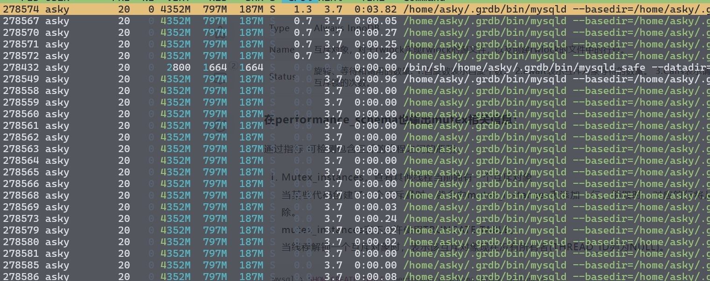
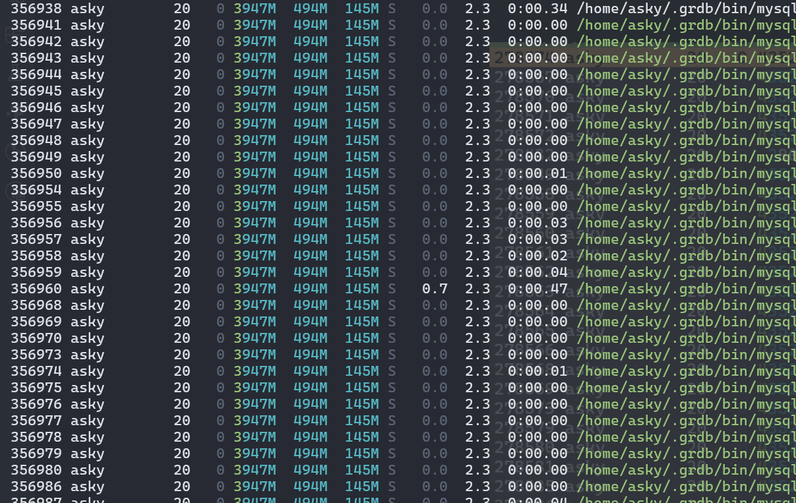

performance_schema
简介
pfs， MySQL 自带的内核检测工具，用于监控 MySQL 服务器的运行状态，包括 CPU、内存、磁盘、网络、线程等资源的使用情况，以及 MySQL 服务器的内部运行状态，包括连接、查询、锁、事务等。
研究各项指标的检测实现，也不失为一种看源码的好方法
检测维度
- 代码高度耦合，即使使用宏对核心代码进行包装，但是还有有部分对外的代码嵌在内核的各个角落，不知都对性能有没有影响
- 需要对一个系统接口深度定制，例如 thread，mutex 等，如果使用 c++ 重写估计会简介很多
- 资源消耗严重，状态信息都是保存在内存中，但是理论上这些信息可以在获取是再汇总，或者简单再处理下即可
- pfs 已经默认开启许久，许多工具已经有一定的依赖性，对内，某些功能依赖这个组件，例如显示 thread 的名字，pfs不开，名字统一为 mysqld，对外，可能有些工具依赖
- 此外不确定关闭宏之后，代码是否还正常
- 为什么不直接使用时获取资源，而是需要保存再获取呢
- 多线程，有什么不知道的难点吗
-
PSI_THREAD "thread instrumentation"
- 所有指标的核心，只有打开这个指标，其他的才可以使用，使用 HAVE_PSI_THREAD_INTERFACE 宏进行判断。
- 通过 包装 thread 相关的系统调用，获取线程的创建、销毁、切换等信息，包括线程的状态、资源消耗、等待时间等。
- 内部包装 inline_mysql_thread_xxx 系列函数，大部分在功能没有打开的时候，几乎不起作用
- 当前线程的所用信息保存在 THR_PFS 中，理论上可以从这个对象找到所有当前线程你想要的信息
- 由 全局对象 global_thread_container 保存所有 THR_PFS 对象，查询 threads 表的时候，从这里获取信息
-
PSI_MUTEX "mutex instrumentation"
- 使用 HAVE_PSI_MUTEX_INTERFACE 控制相关功能
- innodb 和外部 SQL 引擎部分不是同一种 mutex，实现机制不一样
-
PSI_RWLOCK "rwlock instrumentation"
-
PSI_COND "condition instrumentation"
-
PSI_FILE "file instrumentation"
-
PSI_TABLE "table instrumentation"
-
PSI_SOCKET "socket instrumentation"
-
PSI_STAGE "stage instrumentation"
-
PSI_STATEMENT "statement instrumentation"
-
PSI_SP "stored procedure instrumentation"
-
PSI_PS "prepared statements instances instrumentation"
-
PSI_IDLE "idle instrumentation"
-
PSI_STATEMENT_DIGEST "statement digest instrumentation"
-
PSI_METADATA "metadata instrumentation"
-
PSI_MEMORY "memory instrumentation"
-
PSI_TRANSACTION "transaction instrumentation"
-
PSI_ERROR "server error instrumentation"
-
PSI_DATA_LOCK "data lock instrumentation"
- 相比 pg 的 pg_lock，MySQL 可以更直观的看出谁在等谁，但是 pg 实现的更轻量级
-
PSI_TLS_CHANNEL "tls channel instrumentation"
- 记录 tsl 状态
-
PSI_SERVER_TELEMETRY_TRACES "server telemetry traces instrumentation"
- 实现 telemetry 功能，但是是侵入式实现，且没有见过的东西，可以直接删掉
-
PSI_SERVER_TELEMETRY_LOGS "server telemetry logs instrumentation"
-
PSI_METRICS "server telemetry metrics instrumentation"
使用案例
架构
作为 MySQL 的一个存储引擎，内部存储各项系统指标，
http://mysql.taobao.org/monthly/2021/09/03/
必要性？
- 内部一些瞬时指标，是否可以直接获取，而不需要存储
- 那些指标是需要体现变化趋势的，pfs 有么
开启之后的内存大小 
关闭之后的内存大小 
少了大概 300 M
ST_SCHEMA_TABLE
information_schema 中的临时表，用于实现一些实时的内存信息的查询，当前有下面
ST_SCHEMA_TABLE schema_tables[] = {
{"COLUMN_PRIVILEGES", column_privileges_fields_info, fill_schema_column_privileges, nullptr, nullptr, false},
{"ENGINES", engines_fields_info, fill_schema_engines, make_old_format, nullptr, false},
{"OPEN_TABLES", open_tables_fields_info, fill_open_tables, make_old_format, nullptr, true},
{"OPTIMIZER_TRACE", optimizer_trace_info, fill_optimizer_trace_info, nullptr, nullptr, false},
{"PLUGINS", plugin_fields_info, fill_plugins, make_old_format, nullptr, false},
{"PROCESSLIST", processlist_fields_info, fill_schema_processlist, make_old_format, nullptr, false},
{"PROFILING", query_profile_statistics_info, fill_query_profile_statistics_info, make_profile_table_for_show, nullptr, false},
{"SCHEMA_PRIVILEGES", schema_privileges_fields_info, fill_schema_schema_privileges, nullptr, nullptr, false},
{"TABLE_PRIVILEGES", table_privileges_fields_info, fill_schema_table_privileges, nullptr, nullptr, false},
{"USER_PRIVILEGES", user_privileges_fields_info, fill_schema_user_privileges, nullptr, nullptr, false},
{"TMP_TABLE_COLUMNS", tmp_table_columns_fields_info, show_temporary_tables, make_tmp_table_columns_format, get_schema_tmp_table_columns_record, true},
{"TMP_TABLE_KEYS", tmp_table_keys_fields_info, show_temporary_tables, make_old_format, get_schema_tmp_table_keys_record, true},
{nullptr, nullptr, nullptr, nullptr, nullptr, false}};
在查询的时候，在 add_table_to_list 中会构建相关的 Table_ref 后续在查询中，会使用对应的 fill_xx 填充 table 中 files 的数据